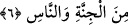
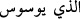

İsm-i mevsûl, sıfat olarak mecrûrdur. Dolayısıyla Hannâs kelimesi üzerinde vakıf
yapılmaz. Ya da vesvese vereni zemmetmek için mansûb veya merfû da olabilir. Bu
durumda “Hannâs” üzerinde vakıf yapmak güzel olur.
Allah Teâlâ Hazretleri evvelâ onun vesvesesini sonra da o vesvesenin mahallini
zikretmiştir ki, o da insanların slarıdır. “İnsanların slarına vesvese verir” sözündeki
sırrı düşün. Allah Teâlâ “İnsanların kalplerine…” demedi. S, kalbin sâhası ve evidir.
Kalbe vâridât oradan girer. Önce sda toplanır, oradan kalbe geçer. Bu meyanda s ana
giriş kapısı ile ev arasında bulunan avluya benzer. Kalpten de irâde ve emirler sadra
çıkar. Sonra da askerlere dağılır. İşte şeytan kalbin sahası olan bu sadra girer ve kalbe
ilkâ etmek istediklerini oradan ilkâ eder. O slara vesvese verir de bu vesveseler slardan
kalplere geçer.
Bazı hakikat erbâbı demişlerdir ki: Kalbin görme, işitme, koku alma, tatma ve
dokunma duyuları gibi beş melekî emîri vardır ki, bunlara havâs/hâssalar denir. Ayrıca
rûh-ı hayvânî, rûh-ı hayâlî, rûh-ı fikrî, rûh-ı aklî ve rûh-ı kudsî gibi beş tane de melekûtî
emîri vardır ki, bunlara da ervâh denilir. Emr-i ilâhî kalpten bu emîrlerden birine
gelince hakikatine göre kendine gelen bu emre uymaya koşar. Havâtır ve vesveseleri de
buna kıyâs et! İnsanın azmi onlardan her birini dışarıya çıkarır ve duyular ve kuvveler
vâsıtasıyla onları icrâ eder.
“Fî sudûri’n-nâs” sözü, şeytanın cinlerin slarına vesvese veremediğini gösterir.
Âkâmu’l-mercân’da demiştir ki: Cinnînin cinnînin sadrına vesvese verdiği, insanın
içine girer gibi içine girdiği ve insanın kanının dolaşması gibi onun içinde dolaştığına
dâir herhangi bir delil vârid olmamıştır.
6. (O şeytan) gerek cinden, gerek insandan (olsun).
Âyet-i kerimede geçen “cinne” kelimesi cin topluluğu demektir. “min” harf-i cerri
’nun beyânıdır. Vesvese verenin insan ve cin olmak üzere iki tür olduğunu
açıklar. Nitekim En’âm sûresi 112. âyette “İnsan ve cin şeytanları” buyrulmaktadır.
Cin şeytanı nasıl bazen vesvese verip bazen saklanıyorsa insan şeytanı da aynı
şekildedir. Çünkü bâtıl fikirler ortaya koyar ve kendisini şefkatli bir nasihatçi sûretinde
gösterir. Eğer dinleyen onu kınarsa geri çekilir ve vesveseyi bırakır. Yok eğer kabul
ederse daha aşırı şekilde yüklenir.
el-Es’iletü’l-Mukhame isimli eserde şöyle denir: Kim başkasını bir bâtıla çağırır da
çağrılan kimse o bâtılı kalbinde tasavvur ederse bu vesvese olur. Cenâb-ı Hak şöyle
buyurur: “Nefsinin insana verdiği vesveseyi biz biliriz” [Kâf, 50/16]. O halde insanın
kendi nefsine vesvese vermesi mümkünse başkasına vermesi de mümkündür.
Vesvesenin hakikati şahıslara göre değişmez. İnsanların slarına cinler yönünden onların